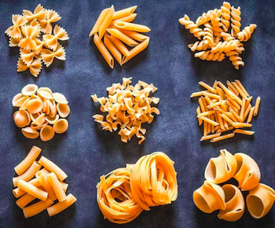

Nutritional Facts
Curious about the nutritional value and more information on your favorite carb? Check out the information below!
- Pasta is a type of noodle that's traditionally made from durum wheat, water or eggs. It is formed into different noodle shapes and then cooked in boiling water.
- Most people prefer refined pasta, meaning that the wheat kernel has been stripped of the germ and bran along with many of the nutrients it contains.
- Refined pasta is higher in calories and lower in fiber. This may result in decreased feelings of fullness after you eat it, compared to eating high-fiber, whole-grain pasta.
- It should also be noted that the glycemic index of pasta is in the low to medium range, which is lower than that of many other processed foods.
- Whole-grain pasta is typically high in fiber, manganese, selenium, copper and phosphorus, while refined, enriched pasta tends to be higher in iron and B vitamins.
- Pasta is high in carbs, with a one-cup serving of cooked spaghetti containing between 37–43 grams, depending on whether it is refined or whole-grain.
- Carbs are broken down quickly into glucose in the bloodstream, which results in a sharp rise in blood sugar. Refined pasta, in particular, is higher in carbs and lower in fiber than whole-grain pasta.
